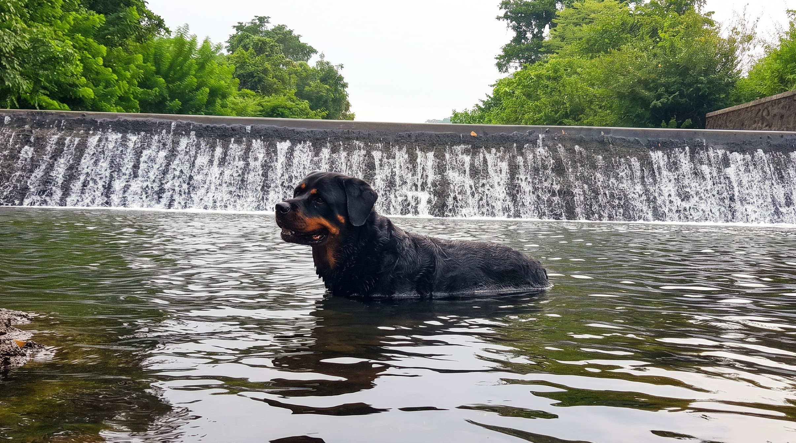

On two wheels
Ride the quiet lanes.
Take a bicycle out for an easy turn through the surrounding countryside.

Explore
Follow a forest trail, share a slow meal by the water, or stay in and let the day find its own shape.
At your own pace
There is no fixed agenda here. Choose an experience we can arrange, head out on your own, or make the property your entire plan.

Host-led · paid experience
An unhurried outing with a simple picnic set-up, tea or coffee, and a seasonal snack chosen for the day.
₹1,000 for up to four guests
Advance booking recommended. We’ll confirm timing and local conditions with you before you go.
Ask about the lake picnic

After dark · paid add-on
Gather around a bonfire and linger over a barbecue after the light has gone from the trees.
₹500 per person
Advance booking required and offered when the weather allows.
Ask about bonfire & barbecueOn the property
Some days call for doing a little more. Others simply need a good place to begin.
On two wheels
Take a bicycle out for an easy turn through the surrounding countryside.

Sleep outside
Bring your own gear and ask us about setting up on the property.

Play together
A little friendly competition—plus football and indoor games when you want them.

Four-legged explorers
For dogs who think a day outdoors should include a splash. Keep them close around water and let us know if you would like local guidance for the day.
Independent nearby outings
Forts, caves, river country and a little bit of adventure—within an easy drive of Breathe Woods.
Travel times are approximate. Ask us for current local guidance before setting out.
The day is yours
We’ll help you shape the parts that need arranging.